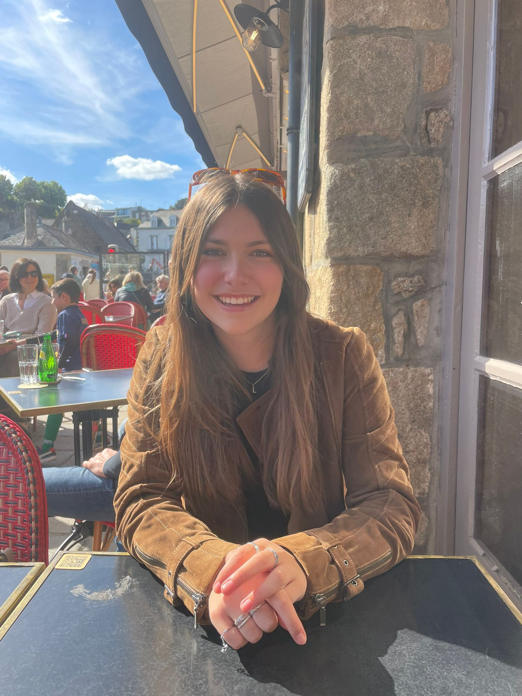

WEB DESIGN · COMMUNICATION · CRÉATION
Salut, moi
c’est Chiara.
J’assemble les idées, les images et le code pour créer des projets qui ont quelque chose à raconter.

01 / PORTFOLIO
Quelques projets
à découvrir.
Du premier croquis au résultat final : une sélection de travaux réalisés pendant mes études en MMI.
02 / SAVOIR-FAIRE
Plusieurs cordes
à mon arc.
Une formation transversale qui me permet de passer de l’idée à la réalisation.
Web & UI/UX
Structurer l’information, dessiner des wireframes, créer des maquettes et intégrer des interfaces accessibles et responsives.
HTML / CSS · JavaScript · Figma · WordPressGraphisme
Construire une identité visuelle, travailler la typographie et composer des affiches ou des contenus pour les réseaux sociaux.
Illustrator · Photoshop · CanvaAudiovisuel
Écrire un scénario et un storyboard, cadrer et enregistrer, puis monter un récit rythmé en image et en son.
DaVinci Resolve · CapCut · storyboardCommunication
Analyser une cible, auditer des supports, formuler des recommandations et bâtir une stratégie de diffusion cohérente.
Stratégie · audit · contenusGestion de projet
Définir des objectifs, répartir les rôles, planifier les étapes et adapter le travail collectif aux contraintes et aux retours.
Cahier des charges · organisation · équipeIdentité visuelle
Associer couleurs, formes et messages pour rendre un projet reconnaissable sur ses différents supports.
Recherche · direction artistique · déclinaisons
03 / QUI JE SUIS
Un peu plus
sur moi.
Je suis Chiara, étudiante en 2e année de BUT Métiers du Multimédia et de l’Internet à l’IUT de Lannion.
J’aime comprendre comment les choses fonctionnent, imaginer des solutions et les rendre visibles. La mosaïque, transmise par ma mère, m’a appris la patience et le soin du détail : assembler pièce après pièce jusqu’à former un tout.
Sur un terrain de basket, mon rôle d’arbitre m’apprend à décider, communiquer et garder mon calme. Dans un projet créatif, je retrouve ce même plaisir de construire avec les autres.
04 / CONTACT
On crée quelque chose
ensemble ?
Je recherche un stage d’avril à juin 2026 en web design ou en communication, à Lannion ou à Vannes. Parlons de votre projet !
M’écrire un messageUNE IDÉE ? UN PROJET ?
UN SIMPLE BONJOUR ?